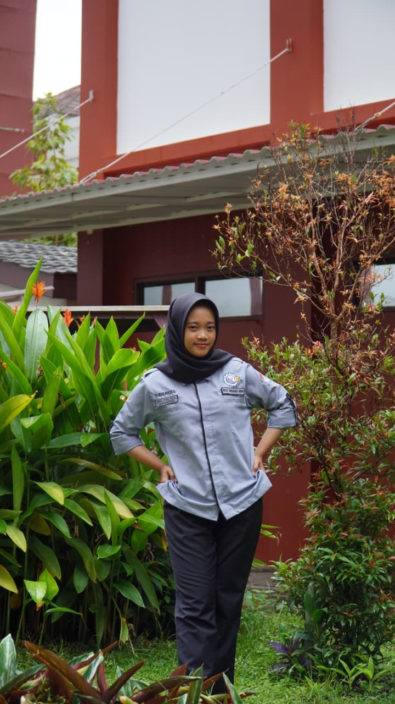

Kepada Yth.
HRD PT Maju Sejahtera,
Di tempat.
Dengan hormat,
Saya yang bertanda tangan di bawah ini:
| Nama | Anisa Diyah Ayu Lestari |
| Tempat, Tanggal Lahir | Madiun, 24 Juni 2006 |
| Alamat | Cikarang Utara, Jawa Barat |
| anisadiyahayulestari@gmail.com | |
| No. HP | 085811020892 |
Berdasarkan informasi lowongan pekerjaan yang dipublikasikan di sosial media,
saat ini PT Maju Sejahtera sedang membuka lowongan pekerjaan untuk posisi Web Developer
di wilayah Jakarta.
Untuk itu, saya bermaksud mengajukan lamaran pekerjaan untuk posisi tersebut di perusahaan
yang Bapak/Ibu pimpin.
Saya merupakan lulusan Teknik Informatika yang memiliki minat dan kemampuan dalam pengembangan web,
khususnya pada pembuatan antarmuka dan pengelolaan sistem berbasis web.
Saya terbiasa menggunakan HTML, CSS, JavaScript,
dan teknologi pendukung lainnya serta mampu bekerja secara individu maupun dalam tim untuk menghasilkan
solusi yang efektif.
Untuk pertimbangan lebih lanjut maka saya melampirkan portofolio yang dapat diakses pada link berikut: https://github.com/anisadiyahayu/CV_Anisa
Demikian surat lamaran ini saya buat dengan sebenar-benarnya. Besar harapan saya untuk dapat mengikuti tahap seleksi selanjutnya. Atas perhatian Bapak/Ibu, saya ucapkan terima kasih.
Hormat saya,
Anisa Diyah Ayu Lestari